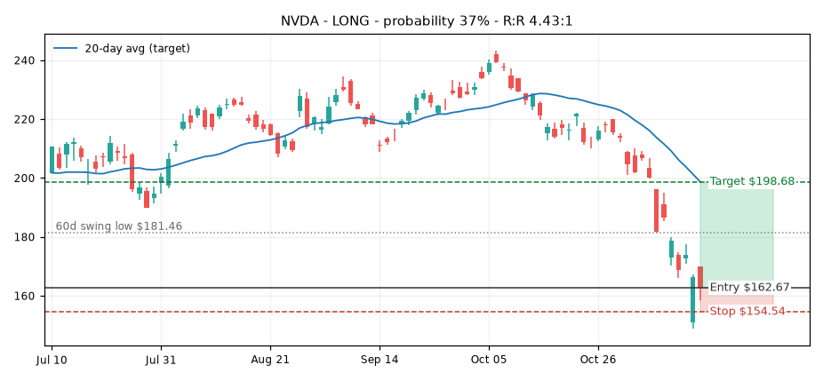
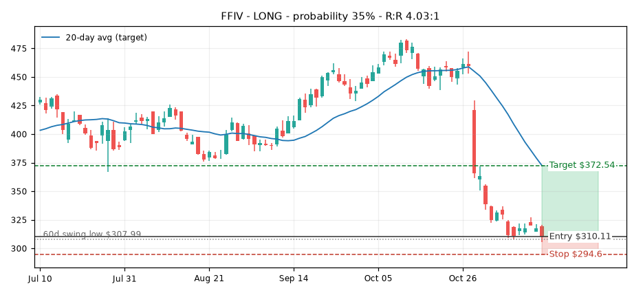
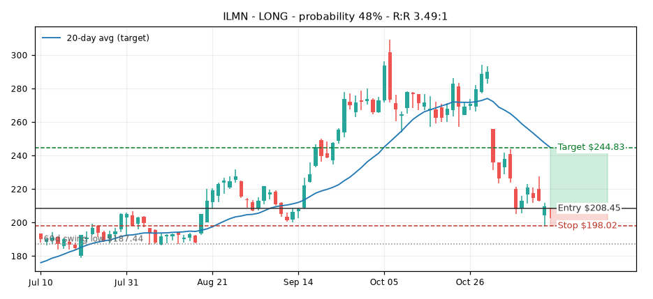
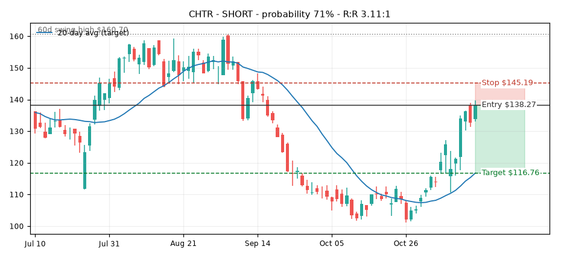
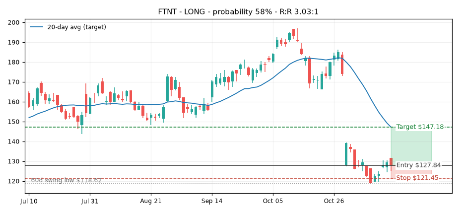
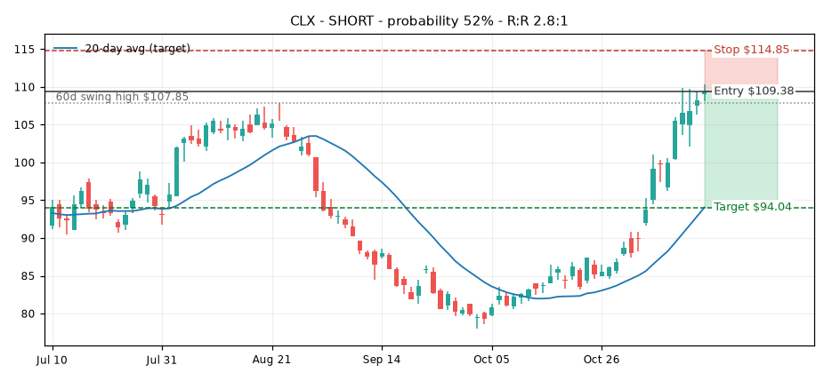
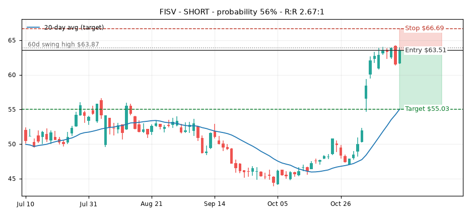
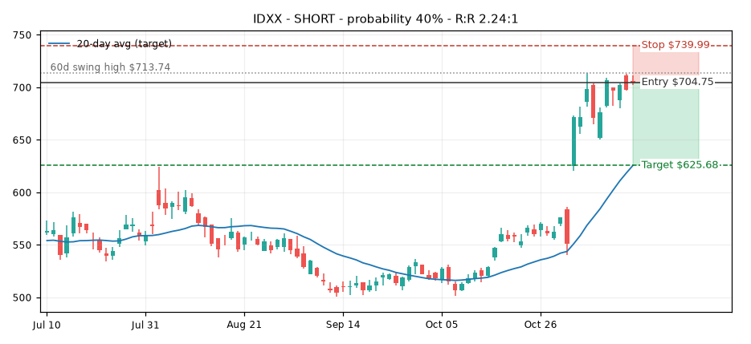
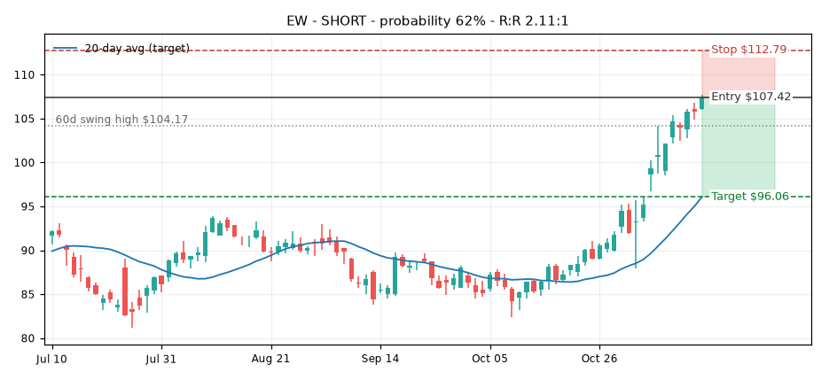

Last updated: 2026-11-13
Live track record: 1157 closed picks, 34% win rate. Average predicted probability 41% vs actual 59% (17 decided). 115 still open. Full track record →
| Ticker | Sector | Dir | Price | RSI(7) | % vs 20D | Volume | Entry | Stop | Target | R:R | Avg Hold | Probability | Hist. win rate | Sample | Earnings |
|---|---|---|---|---|---|---|---|---|---|---|---|---|---|---|---|
| NVDA | Information Technology | LONG | $162.67 | 20.2 | -18.1% | 1.51x 🔥 | $162.67 | $154.54 | $198.68 | 4.43:1 | 7.4 | 37% | 67% | 15 | 4d |
| FFIV | Information Technology | LONG | $310.11 | 19.5 | -16.8% | 0.46x | $310.11 | $294.6 | $372.54 | 4.03:1 | 8.5 | 35% | 50% | 8 | 74d |
| ILMN | Health Care | LONG | $208.45 | 29.3 | -14.9% | 0.31x | $208.45 | $198.02 | $244.83 | 3.49:1 | 7.0 | 48% | 55% | 11 | 83d |
| CHTR | Communication Services | SHORT | $138.27 | 73.6 | 18.4% | 0.69x | $138.27 | $145.19 | $116.76 | 3.11:1 | 7.0 | 71% | 71% | 14 | 77d |
| FTNT | Information Technology | LONG | $127.84 | 35.5 | -13.1% | 0.28x | $127.84 | $121.45 | $147.18 | 3.03:1 | 8.0 | 58% | 73% | 11 | 83d |
| CLX | Consumer Staples | SHORT | $109.38 | 94.0 | 16.3% | 0.53x | $109.38 | $114.85 | $94.04 | 2.8:1 | 9.9 | 52% | 82% | 11 | 81d |
| FISV | Financials | SHORT | $63.51 | 74.2 | 15.4% | 0.52x | $63.51 | $66.69 | $55.03 | 2.67:1 | 8.6 | 56% | 71% | 7 | 89d |
| IDXX | Health Care | SHORT | $704.75 | 72.1 | 12.6% | 0.3x | $704.75 | $739.99 | $625.68 | 2.24:1 | 9.0 | 40% | 55% | 11 | 80d |
| EW | Health Care | SHORT | $107.42 | 87.8 | 11.8% | 0.46x | $107.42 | $112.79 | $96.06 | 2.11:1 | 10.5 | 62% | 92% | 12 | 88d |
LONG = oversold, expected to bounce back up toward the 20-day average. SHORT = overbought, expected to pull back down toward the 20-day average. Stop-loss = 5% against the position. Probability = this ticker's historical win rate minus penalties when the chart structure is broken (hover for reasons). 🔥 means volume was 1.5x+ the 20-day average. Tickers with earnings due within 3 days are excluded. Macro events pulled live from a public economic calendar feed (high-impact USD events only). Mechanical screen only — check news before acting. Not financial advice.
Probability 67% → 37%: broke below 60d swing low (-15); below 200-day avg, downtrend (-8); lower highs and lower lows (-7)
Earlier signals on NVDA: 2026-11-12: ⏳ still open 2026-11-10: ❌ hit stop -10.0% 2026-11-09: ❌ hit stop -5.0%

Probability 50% → 35%: below 200-day avg, downtrend (-8); lower highs and lower lows (-7)
Earlier signals on FFIV: 2026-11-06: ⏳ still open 2026-11-04: ❌ hit stop -5.0% 2026-11-03: ❌ hit stop -5.0%

Probability 55% → 48%: lower highs and lower lows (-7)
Earlier signals on ILMN: 2026-11-12: ⏳ still open 2026-11-05: ❌ hit stop -5.0% 2026-11-04: ❌ hit stop -5.0%

Probability 71%: no structure warnings.
Earlier signals on CHTR: 2026-11-10: ⏳ still open 2026-10-12: ✅ hit target +13.1% 2026-10-09: ✅ hit target +13.2%

Probability 73% → 58%: below 200-day avg, downtrend (-8); lower highs and lower lows (-7)
Earlier signals on FTNT: 2026-11-06: ⏳ still open 2026-11-04: ❌ hit stop -5.0% 2026-11-03: ❌ hit stop -5.0%

Probability 82% → 52%: broke above 60d swing high (-15); above 200-day avg, uptrend (-8); higher highs and higher lows (-7)
Earlier signals on CLX: 2026-11-09: ⏳ still open 2026-11-04: ❌ hit stop -5.0% 2026-09-08: ❌ hit stop -5.0%

Probability 71% → 56%: above 200-day avg, uptrend (-8); higher highs and higher lows (-7)
Earlier signals on FISV: 2026-11-04: ⏳ still open 2026-11-03: ❌ hit stop -5.0%

Probability 55% → 40%: above 200-day avg, uptrend (-8); higher highs and higher lows (-7)
Earlier signals on IDXX: 2026-11-04: ⏳ still open 2026-11-03: ❌ hit stop -5.0% 2026-11-02: ❌ hit stop -5.0%

Probability 92% → 62%: broke above 60d swing high (-15); above 200-day avg, uptrend (-8); higher highs and higher lows (-7)
Earlier signals on EW: 2026-11-09: ⏳ still open
